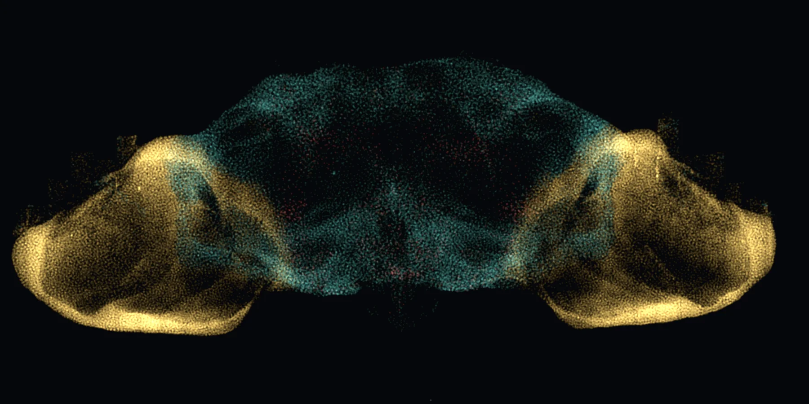
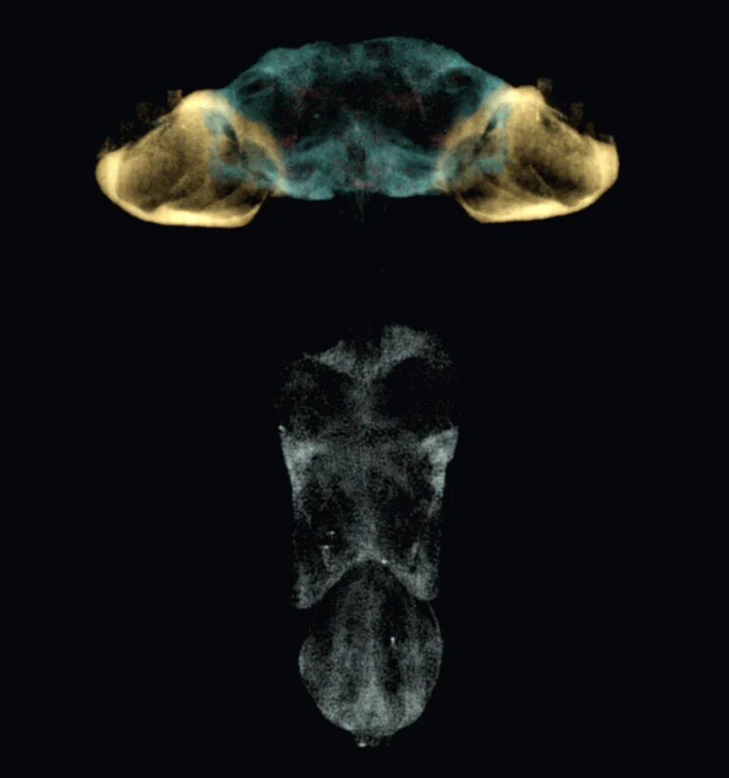
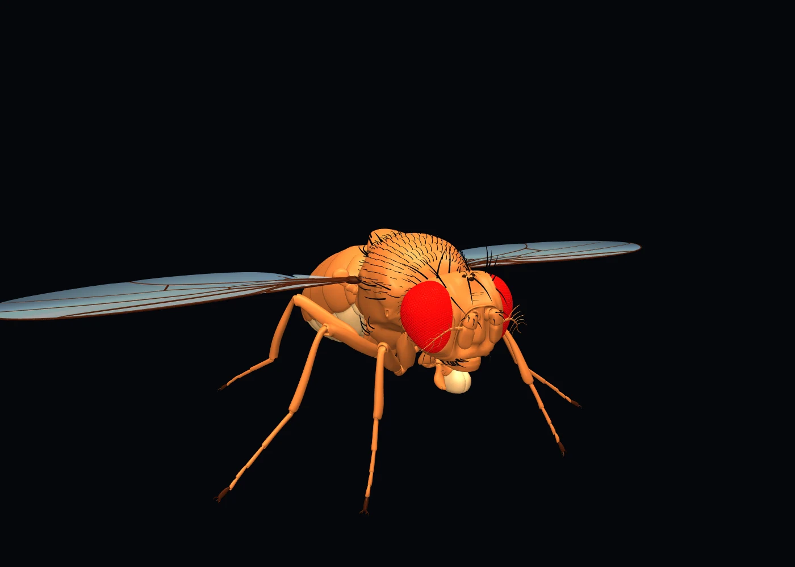
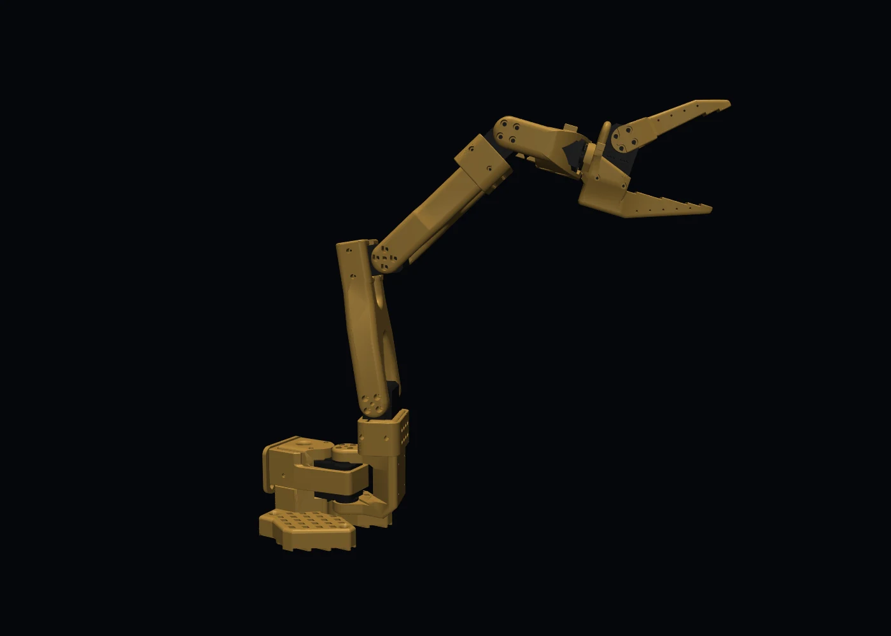

Fly101 · research in simulation
A fruit-fly brain, wired to a robot arm.
The complete MaleCNS connectome, simulated neuron by neuron, follows a live human hand through a simulated SO-101 arm.
Real neuron positions from the connectome. Drag to rotate.
- neurons, wired as mapped
- 165,122
- closed-loop step
- 30 ms
- median live tracking error
- 17.8 mm
- synapses changed
- 0
The idea
MaleCNS is a complete electron-microscopy map of a male fruit fly’s central nervous system: 165,122 neurons and 25.6 million connections. Fly101 runs every neuron as a spiking model on one laptop GPU, in a live loop, wired exactly as in the data.
Nothing inside the brain is trained. Only a small linear readout learns, turning the activity of 250 neurons into commands for the arm.

The loop
- A webcam tracks your hand and sets a target pose for the gripper.
- The error reaches the fly’s eye as firing across 5,307 first-stage visual neurons.
- The whole brain responds for 30 ms of simulated time.
- A learned readout turns the activity into a motion command.
- The arm moves in MuJoCo, under speed limits, and the loop repeats.


Results
- Live human hand, 104 s
- 17.8 mm median
- Held-out recorded hand motion
- 20.05 mm median
- Gripper accuracy
- 100 %
- Live rate
- 32 updates/s
- Joint-speed or acceleration violations
- 0
Measured in simulation. The real SO-101 arms are calibrated and teleoperated, and hardware work is under way.
Technical notes: full results, baselines and open questions
Status on 4 November 2026. No brain has driven the real arm yet, and these experiments are ongoing.
Full test results
| Test | Result | Bar |
|---|---|---|
| Held-out hand motion | 20.05 mm | ≤ 25 mm |
| Same motion at 1.8× speed | 43.2 mm | ≤ 45 mm |
| Brain replaced by its average activity | 177 mm | > 50 mm |
| Live, 104 s (teacher on the same motion: 19.0 mm) | 17.8 mm | None |
These use an ideal simulated servo. With a 12 V motor model, median tracking rises to about 22–30 mm, 37–49 % worse. The readout is trained with ridge regression and DAgger, with a hand-written controller as the teacher.
Where the signal lives
I measured how well groups of 250 neurons predict the teacher’s commands (held-out R²), by their synaptic distance from the input. The whole brain sits within five synapses of the input, but the signal doesn’t get that far:
| Group | Most informative 250 | Random 250 |
|---|---|---|
| 1 synapse from input | 0.776 | 0.546 |
| 2 synapses | 0.644 | 0.260 |
| 3 synapses | 0.052 | 0.017 |
| 4 synapses | ≈ 0 | ≈ 0 |
| Medulla (visual) | 0.787 | 0.523 |
| Mushroom body, protocerebrum, GNG, VNC | ≈ 0 | ≈ 0 |
With this input, the fly’s early visual system is the signal path: 240 of the best readout’s 250 neurons are in the medulla. The central brain and the descending neurons, which normally drive the fly’s body, carry almost none of it.
The wire test
To steer an arm, a controller has to combine the error with the arm’s current posture: an error × posture product. So I gave the brain both signals and asked whether its descending neurons could produce the required joint rates. Then I compared them with a “wire”, a readout that skips the brain entirely.
| Readout | Joint-rate R² (held out) |
|---|---|
| Brain, descending neurons | 0.34 |
| Linear wire, raw inputs, no brain | 0.65 |
| Bilinear wire, inputs plus error × angle products | 0.92 |
The descending neurons do carry the errors (R² 0.67) and the joint angles (0.79), but not their product. A follow-up read from all 12,847 recorded neurons reached 0.54, and still added nothing beyond the linear wire. By the rule I had set before running it, that stage stopped there.
The later experiments point the same way:
- Passing the bars isn’t proof. A linear wire with the motor model also tracks reasonably (32.8 mm), so tracking alone can’t show the brain does the inverse kinematics.
- A harder test separates controllers. On pan-heavy poses, linear controllers fail 59–72 % of the cases the teacher holds, and nonlinear ones about 13 %. The fixed brain with a linear readout fails like the linear wires.
- Real wiring versus rewired brains. The real graph first beat rewired controls on one joint, but on fresh targets the effect shrank and the winning joint changed. Silencing the candidate neurons did not remove what was left, so the preregistered reading is “not causal”.
- Neuron model. A conductance-synapse variant showed no useful gain (the test was inconclusive), and voltage floors ruled out one artefact explanation for the remaining pan interaction.
Each stage has its success bar, stop rule and compute budget fixed before the run, which is what makes a “no” worth trusting.
What comes next
- Path to the real arm. The brain drives a task-space readout, fixed analytical inverse kinematics maps it to joints, and LeRobot drives the hardware. The loop already runs through LeRobot’s simulated SO-101 interface; fitting the motor model to the real arm comes next.
- Can the brain form the product itself? The open research question is whether any input encoding gets a fixed connectome to compute error × posture, and whether the real wiring is what does it.
Sources and credits
- MaleCNS v1.0 ↗ connectome (CC-BY), with regions from neuPrint ↗. The brain images are my renders of its neuron positions.
- flybody ↗ fly model by Google DeepMind and HHMI Janelia (Apache-2.0).
- SO-ARM100 ↗ robot model (Apache-2.0), with kinematics from LeRobot (Apache-2.0).
- flycoinrh ↗ neural reference (MIT). GeNN, MuJoCo and MediaPipe run the simulation, physics and hand tracking.
The repository is private for now. Email me for a walkthrough.